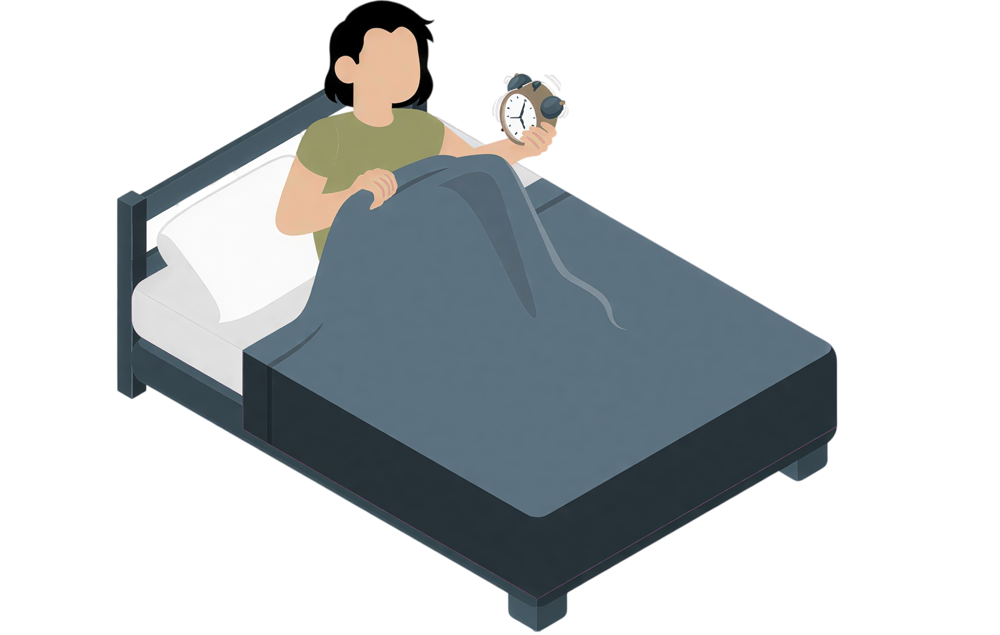

Nesanica nije nedostatak sna — to je signal da nervni sistem ne oseća sigurnost da se prepusti odmoru. Smirujemo sistem, snižavamo kortizol i prirodno vraćamo ritam sna.
Kod nesanice telo ostaje u stanju unutrašnje pripravnosti — kortizol je povišen, disanje plitko, upala tinja, a nadbubrežne žlezde se iscrpljuju. Organizam bukvalno zaboravi kako da se opusti.
Zato ne uspavljujemo telo na silu — vraćamo mu osećaj sigurnosti. Kada nervni sistem shvati da je bezbedno, san dolazi prirodno.

Magnezijum, podrška produkciji serotonina i melatonina, eliminacija kofeina i šećera uveče. Fokus na hranu koja smiruje, a ne stimuliše simpatikus.
Prigušena svetlost, bez ekrana sat vremena pre spavanja, sporo dijafragmalno disanje (udah 4s / izdah 6–8s) koje aktivira parasimpatikus i smiruje telo.
Kamilica, matičnjak, valerijana, lavanda, pasiflora — biljke koje su generacijama koristile za miran san. Uz magnezijum glicinat i omega-3 za nervnu ravnotežu.
White Chestnut za misli koje ne prestaju, Rescue Remedy za napetost pred spavanje — odabrane i prilagođene isključivo vašem emocionalnom obrascu.
Šta dobijate
Ove tegobe nisu slabost — one su poruka tela da nešto mora da se promeni.
Ležite u krevetu ali san ne dolazi — misli kruže, telo ostaje budno duže od 30 minuta.
Budite se u 2, 3 ili 4 ujutru i ne možete ponovo da zaspite, ili se budite prerano.
Ustajete iscrpljeni uprkos dovoljnom broju sati u krevetu — san ne obnavlja energiju.
Napetost u telu pred spavanje, ubrzan puls, osećaj da se ne možete opustiti.
Čim legnete, mozak kreće da radi — brige, planovi, razgovori koji se ponavljaju.
Važna napomena: Program je edukativnog i suportivnog karaktera i ne zamenjuje medicinsku dijagnostiku ni terapiju. Kod ozbiljnih poremećaja sna konsultujte i lekara specijaliste.
„Telo želi san — ali nervni sistem mora prvo— Dragana Lombardelli
da oseti sigurnost da se prepusti."
Lekar · Terapeut · Naturopata
Zakažite termin i zajedno ćemo napraviti protokol koji odgovara baš vašem nervnom sistemu i načinu života.
Kontaktiraj meNaturopatski programi su edukativnog i suportivnog karaktera i ne zamenjuju medicinsku dijagnostiku ni terapiju lekara specijaliste.